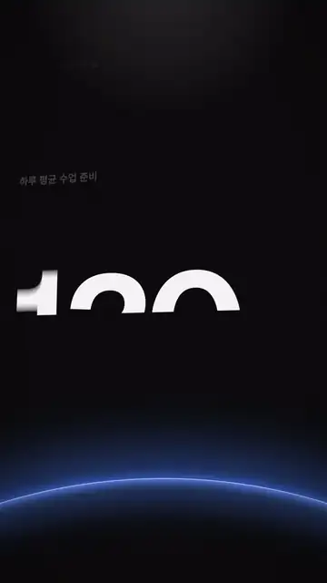
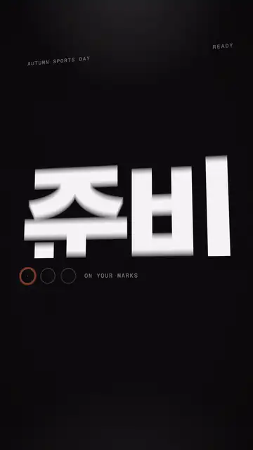
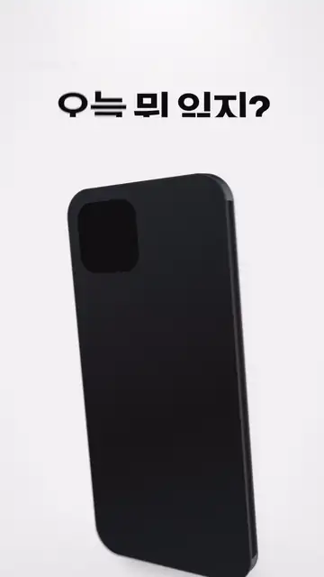
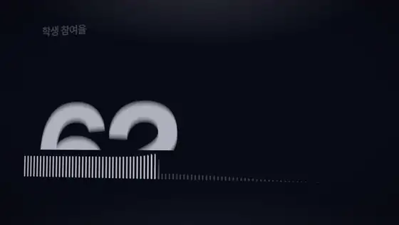
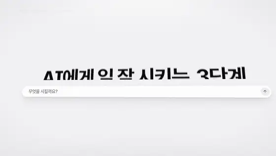
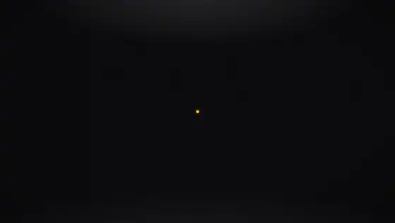
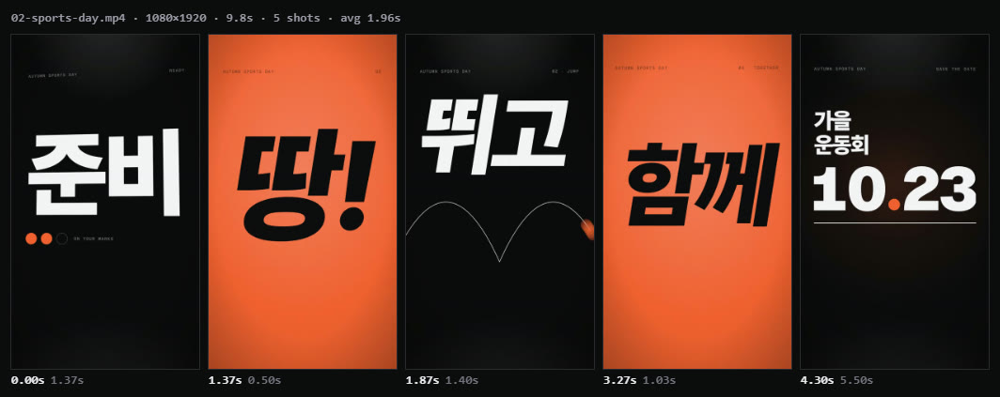
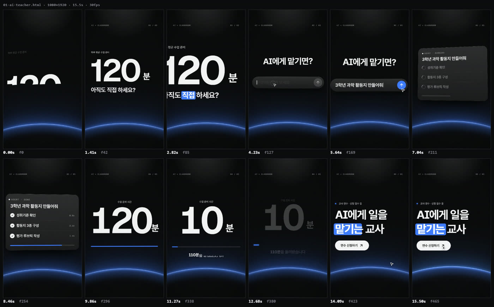
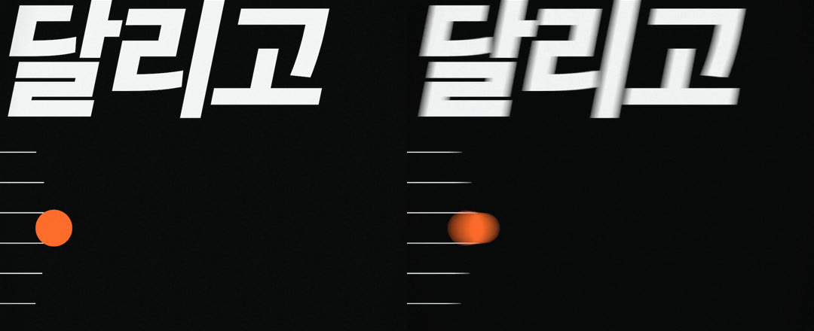

교사 대상 AI 연수 홍보 쇼츠. 수업 준비 시간이 확 줄어든다는 걸 보여줘
Claude · Codex · ChatGPT 모션그래픽 스킬 + MCP
AI가 감독처럼 다시 쓰고, 만들고, 스스로 채점해 고친 뒤, 진짜 모션 블러와 믹스된 소리로 렌더하고 결과 파일까지 확인합니다.
리프롬프트
10.23의 소수점으로 착지한다
준비+ 신호등 3박 · 1.4
땅!→ 달리고 · 뛰고 · 던지고 · 3.3
함께· 4.2
가을 운동회+ 레인 여섯 줄 · 6.1 스톱워치 →
10.23홀드
카메라·전환·박자는 요청에 없던 것입니다.

결과 · 9:16 · 9.8초
훅, 카메라, 전환, 리듬, 소리. 고르는 일은 감독이, 확인은 화면이 합니다.
샘플

교사 대상 AI 연수 홍보 쇼츠. 수업 준비 시간이 확 줄어든다는 걸 보여줘
우리 학교 가을 운동회 홍보 쇼츠 오프닝 만들어줘. 신나게

독서 앱 소개 영상. 폰 화면에서 책 추천받는 장면이 들어가면 좋겠어

학생 참여율이 62%에서 96%로 올랐다는 걸 발표 화면에 띄울 영상으로

AI에게 일 잘 시키는 3단계를 설명하는 유튜브용 컷. 역할 주기, 자료 주기, 형식 정하기

채널 영상 끝에 붙일 4초짜리 로고 엔딩
기능
측정
참고 영상은 컷 리듬·움직임·색·BPM으로, 사이트 주소는 실제 색·글꼴·로고로, 음악은 박과 마디로 바꿔 연출에 씁니다.

참고 영상 → 샷 시트
소리
효과음 20종을 코드로 합성합니다. 파일도 라이선스도 필요 없습니다. 움직임에 표시 하나만 붙이면 그 프레임에 소리가 나고, 음악은 박을 재서 컷을 맞추고 목소리 아래로 낮춰 −14 LUFS로 맞춥니다.
자막
대본과 녹음을 주면 쉬는 구간으로 문장을 맞추고 단어 시각까지 정렬합니다. 카라오케·팝·박스·라인 네 가지 스타일.
검수
겹침·잘림·가독성·정지·소리를 실제 프레임에서 재고 100점으로 채점합니다. 콘택트 시트를 직접 보고 고친 뒤 렌더하고, 결과 파일의 검은 화면·멈춤·음량까지 다시 봅니다.

먼저 고칠 것 · 소리가 없음. 음악이나 핵심 움직임 4–8곳의 효과음을 넣는다.
렌더
셔터가 열린 동안의 움직임을 재서 빠른 프레임만 최대 32번 나눠 찍습니다. 기울어진 화면을 확대하는 프레임은 2–3배로 찍어 줄여 작은 글자까지 또렷합니다. 같은 파일이면 어느 컴퓨터에서나 같은 영상이 나옵니다.

들어 있는 것
설치
Node.js 18+ · Chrome 또는 Edge · ffmpeg. 스킬은 Claude Code·Codex에, MCP 서버는 Claude Desktop 등에 연결됩니다.
“학교 소개 영상 20초, 가로로. 색은 우리 학교 홈페이지 느낌으로.”